Hazel 游戏引擎笔记 019：实现输入轮询
本节来源：The Cherno 游戏引擎系列第 19 讲“输入轮询”，时长约 25 分 40 秒。
原课程与 Hazel 代码作者：The Cherno。代码参考提交：e1bb18d2。
本文由视频字幕重构、翻译并整理，不是官方教材；术语和代码以原视频及同期 Hazel 仓库为准。
本节目标
Hazel 已经拥有事件系统：按键、鼠标移动或窗口变化发生时，Layer 会收到事件通知。但事件系统只回答“刚刚发生了什么”，无法回答“现在是否仍处于按下状态”。
本讲要补上另一套输入模型：轮询（polling）。客户端代码可以在任意时刻主动询问：
Input::IsKeyPressed(keycode);
Input::IsMouseButtonPressed(button);
Input::GetMousePosition();
两种输入模型并不是互相替代，而是分别解决不同问题：
graph LR
A[输入发生] --> B[事件系统]
B --> C[通知 Layer 刚刚发生了什么]
A --> D[输入轮询]
D --> E[随时查询当前状态]
C --> F[触发一次动作]
E --> G[持续行为与组合条件]
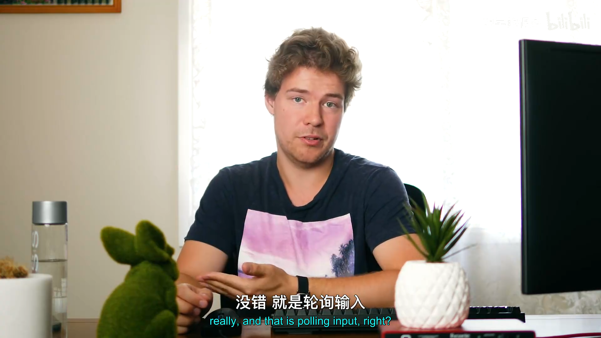
📷 事件系统负责通知，输入轮询负责查询当前状态
回到原视频 (00:00:18)
1. 为什么需要轮询
(参考时间: 00:01:04)
以 Maya 风格的相机控制为例，用户可能按住 Alt，再按住鼠标左键并移动鼠标。鼠标移动事件本身只提供坐标，控制器还需要同时判断：
Alt 当前是否按下？
鼠标左键当前是否按下？
如果两者都成立，这次鼠标移动才应该旋转相机。
客户端完全可以在自己的 Layer 中维护这些状态：
- 收到鼠标按下事件时把状态设为
true； - 收到鼠标释放事件时把状态设为
false； - 每次动作再读取自己保存的布尔值。
但这意味着每个客户端都要重复实现同一套状态维护。更合理的做法是由 Hazel 统一保存和查询平台输入状态，并向所有客户端提供一致的输入 API。
2. 设计 Input 接口
(参考时间: 00:02:51)
Input 与 Window 的设计方式相近，但有一个重要差异：
- Window 将来可能有多个实例；
- Input 在本阶段设计为全局管理器，只有一个实例。
因此 Input 类本身只提供静态查询函数，具体行为由平台实现类完成。新增头文件：
Hazel/src/Hazel/Input.h
接口内容如下：
class HAZEL_API Input
{
public:
inline static bool IsKeyPressed(int keycode)
{
return s_Instance->IsKeyPressedImpl(keycode);
}
inline static bool IsMouseButtonPressed(int button)
{
return s_Instance->IsMouseButtonPressedImpl(button);
}
inline static std::pair<float, float> GetMousePosition()
{
return s_Instance->GetMousePositionImpl();
}
inline static float GetMouseX()
{
return s_Instance->GetMouseXImpl();
}
inline static float GetMouseY()
{
return s_Instance->GetMouseYImpl();
}
protected:
virtual bool IsKeyPressedImpl(int keycode) = 0;
virtual bool IsMouseButtonPressedImpl(int button) = 0;
virtual std::pair<float, float> GetMousePositionImpl() = 0;
virtual float GetMouseXImpl() = 0;
virtual float GetMouseYImpl() = 0;
private:
static Input* s_Instance;
};
2.1 静态外观与虚函数实现
调用者只需要写：
Input::IsKeyPressed(keycode)
静态函数随后转发给 s_Instance。s_Instance 的实际类型是平台子类，例如 WindowsInput。
sequenceDiagram
participant C as Client
participant I as Input
participant W as WindowsInput
participant G as GLFW
C->>I: IsKeyPressed(keycode)
I->>W: IsKeyPressedImpl(keycode)
W->>G: glfwGetKey(window, keycode)
G-->>W: GLFW_PRESS / RELEASE / REPEAT
W-->>I: bool
I-->>C: bool
这种结构把“客户端看到什么 API”和“某个平台如何实现”隔开了。
s_Instance 是静态成员，它不属于任何一个 Input 对象。Input 本身因此没有实例数据，只是全局入口和平台接口。
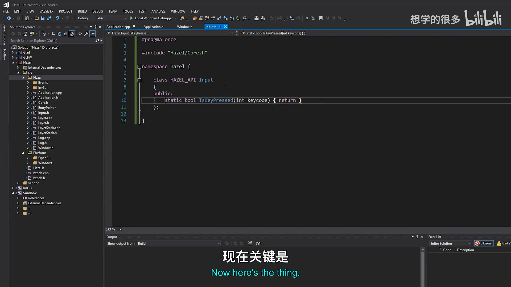
📷 在 Input.h 中定义静态查询接口和平台实现虚函数
回到原视频 (00:06:06)
3. 创建 WindowsInput
(参考时间: 00:07:32)
平台实现放在：
Hazel/src/Platform/Windows/WindowsInput.h
Hazel/src/Platform/Windows/WindowsInput.cpp
头文件继承 Input 并覆盖所有 Impl 函数：
class WindowsInput : public Input
{
protected:
virtual bool IsKeyPressedImpl(int keycode) override;
virtual bool IsMouseButtonPressedImpl(int button) override;
virtual std::pair<float, float> GetMousePositionImpl() override;
virtual float GetMouseXImpl() override;
virtual float GetMouseYImpl() override;
};
这里仍使用 GLFW 键码，但 GLFW 只出现在 Windows 平台实现中，没有进入通用 Input 接口。
新增 .cpp 文件后需要重新生成 Visual Studio 工程，以确保新实现被加入项目并参与编译。
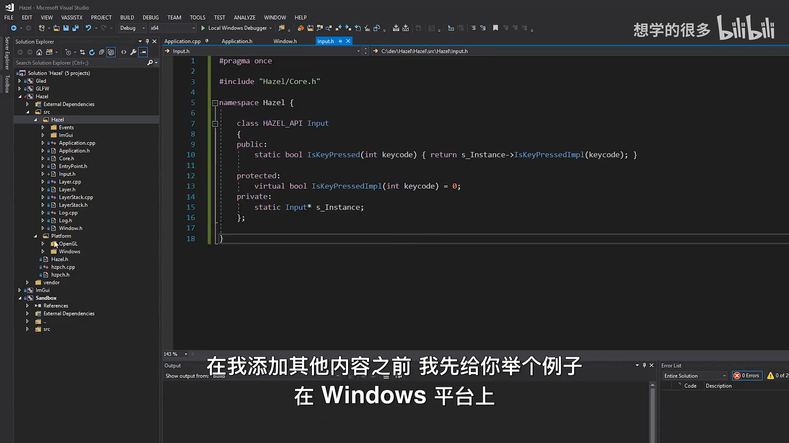
📷 新增 WindowsInput 平台实现类
回到原视频 (00:07:32)
4. 暴露原生窗口
(参考时间: 00:09:45)
GLFW 输入函数需要 GLFWwindow*：
glfwGetKey(GLFWwindow* window, int key);
但 Window 抽象层不能直接暴露 GLFWwindow 类型，否则 Hazel 的公开接口又会绑定到 GLFW。
可选方案包括：
- 把
m_Window设为 public； - 让
WindowsInput成为WindowsWindow的 friend； - 在
Window接口中提供通用的原生窗口句柄。
第一种方案破坏封装；第二种虽然可行，但限制较多。本讲选择第三种方案。
4.1 Window 接口
virtual void* GetNativeWindow() const = 0;
返回类型使用 void*，因为不同平台和不同窗口库可能返回不同类型的原生句柄：
- Windows 可能返回
GLFWwindow*； - 其它平台可能返回 HWND、X11 Window 或平台封装对象。
4.2 WindowsWindow 实现
inline virtual void* GetNativeWindow() const
{
return m_Window;
}
m_Window 的实际类型是 GLFWwindow*，返回时会隐式转换成 void*。
graph LR
A[WindowsInput] --> B[Application::Get]
B --> C[GetWindow]
C --> D[Window::GetNativeWindow]
D --> E["void* 原生句柄"]
E --> F["static_cast<GLFWwindow*>"]
F --> G[glfwGetKey / Mouse / CursorPos]
4.3 为什么覆盖函数继续写 virtual
基类中的函数只要声明为 virtual，派生类覆盖后仍然是虚函数。即使派生类不重复写 virtual，运行时多态也不会消失。
继续写 virtual 不是语言要求，而是可读性选择：它明确提醒读者这里仍在参与虚函数链。override 则更有实际价值，因为函数签名写错时会直接产生编译错误。
编者说明：这只是编码风格取舍，不是 C++ 语义上的必需写法。
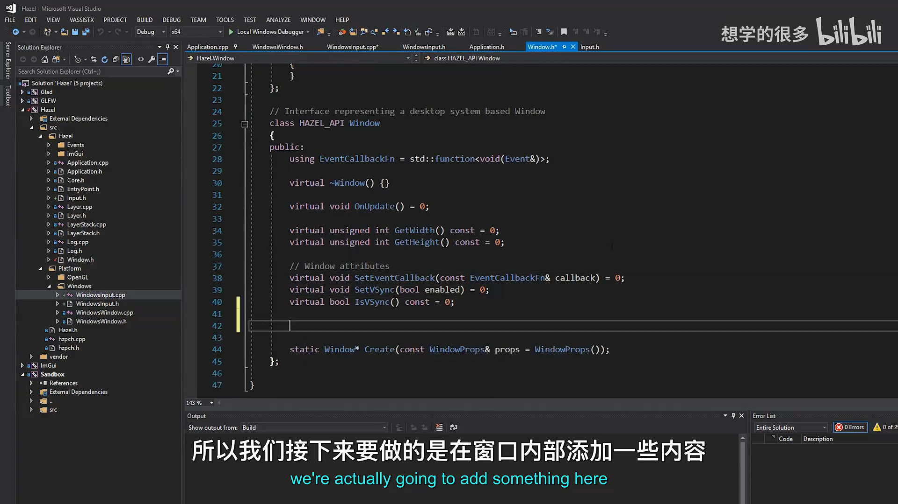
📷 Window 接口增加 GetNativeWindow，WindowsWindow 返回 GLFW 窗口
回到原视频 (00:11:03)
5. 实现键盘轮询
(参考时间: 00:13:24)
bool WindowsInput::IsKeyPressedImpl(int keycode)
{
auto window = static_cast<GLFWwindow*>(
Application::Get()
.GetWindow()
.GetNativeWindow());
auto state = glfwGetKey(window, keycode);
return state == GLFW_PRESS ||
state == GLFW_REPEAT;
}
执行步骤：
- 从全局 Application 取得当前 Window；
- 取得原生窗口句柄；
- 转换为
GLFWwindow*； - 调用
glfwGetKey()； - 把
GLFW_PRESS和GLFW_REPEAT都视为按键处于按下状态。
flowchart TD
A[Input::IsKeyPressed] --> B[WindowsInput::IsKeyPressedImpl]
B --> C[取得 GLFWwindow]
C --> D[glfwGetKey]
D --> E{state}
E -- GLFW_PRESS --> F[返回 true]
E -- GLFW_REPEAT --> F
E -- GLFW_RELEASE --> G[返回 false]
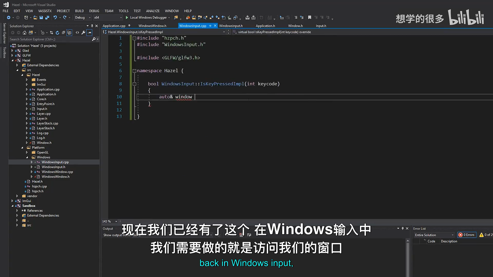
📷 通过 glfwGetKey 实现 IsKeyPressedImpl
回到原视频 (00:13:24)
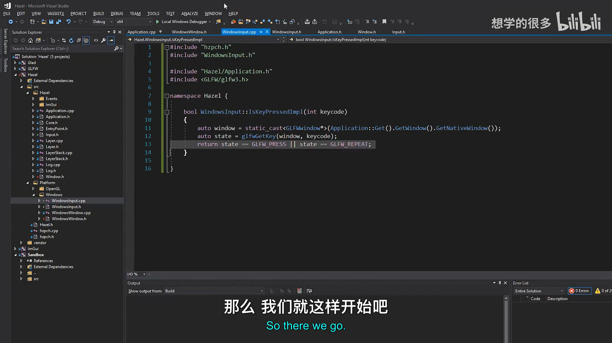
📷 把 PRESS 与 REPEAT 都视为键处于按下状态
回到原视频 (00:15:11)
6. 实现鼠标轮询
(参考时间: 00:17:09)
鼠标接口包括按钮、位置和独立坐标。
6.1 鼠标按钮
bool WindowsInput::IsMouseButtonPressedImpl(int button)
{
auto window = static_cast<GLFWwindow*>(
Application::Get()
.GetWindow()
.GetNativeWindow());
auto state = glfwGetMouseButton(window, button);
return state == GLFW_PRESS;
}
鼠标按钮没有 GLFW_REPEAT 状态，因此只需要判断 GLFW_PRESS。
6.2 鼠标位置
std::pair<float, float> WindowsInput::GetMousePositionImpl()
{
auto window = static_cast<GLFWwindow*>(
Application::Get()
.GetWindow()
.GetNativeWindow());
double xpos, ypos;
glfwGetCursorPos(window, &xpos, &ypos);
return { (float)xpos, (float)ypos };
}
glfwGetCursorPos() 接收两个输出参数指针，并返回 double。Hazel 的输入 API 暂时转换为 float，避免客户端直接处理 GLFW 的数据类型。
sequenceDiagram
participant C as Client
participant I as Input
participant W as WindowsInput
participant G as GLFW
C->>I: GetMousePosition()
I->>W: GetMousePositionImpl()
W->>G: glfwGetCursorPos(window, &x, &y)
G-->>W: double x, double y
W-->>I: pair<float, float>
I-->>C: pair<float, float>
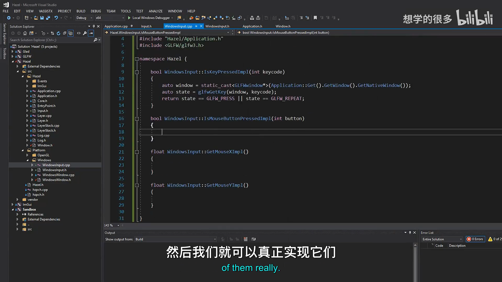
📷 实现鼠标按钮与鼠标位置轮询
回到原视频 (00:18:25)
6.3 独立 X / Y 坐标
GetMouseX() 和 GetMouseY() 复用位置查询：
float WindowsInput::GetMouseXImpl()
{
auto[x, y] = GetMousePositionImpl();
return x;
}
float WindowsInput::GetMouseYImpl()
{
auto[x, y] = GetMousePositionImpl();
return y;
}
这里使用 C++17 的结构化绑定，直接把 std::pair<float, float> 拆成两个具名变量。相比 C++14 时代的 std::get<0>() 和 std::get<1>()，代码更直观。
auto [x, y] = Input::GetMousePosition();
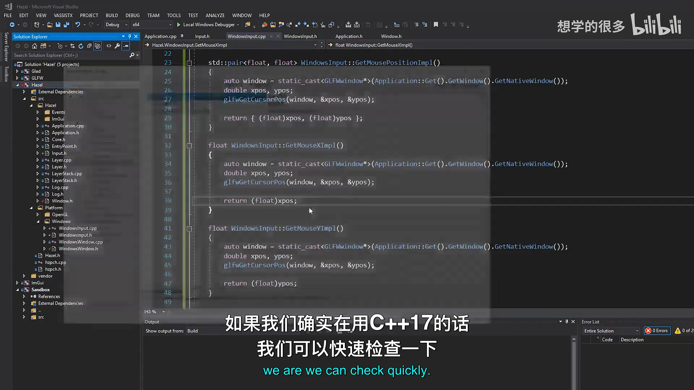
📷 使用 C++17 结构化绑定拆分鼠标坐标
回到原视频 (00:21:04)
7. 初始化 Input 单例
(参考时间: 00:22:18)
Input 需要一个实际的平台实例。它不需要依赖 Application 或 Window 的构造函数，因此可以直接在 WindowsInput.cpp 中初始化：
Input* Input::s_Instance = new WindowsInput();
这个静态对象在程序启动时创建。此时创建的是 WindowsInput 实例本身，并不会立即查询窗口；真正的 Application::Get().GetWindow() 调用发生在客户端轮询输入时。
因此初始化顺序可以理解为：
flowchart TD
A[程序加载] --> B[创建 WindowsInput]
B --> C[Input::s_Instance 指向它]
C --> D[Application 创建 Window]
D --> E[客户端查询 Input]
E --> F[通过 Application 取得原生窗口]
F --> G[调用 GLFW 查询实时状态]
编者说明：new WindowsInput() 创建的对象在该版本中不会显式删除。它属于进程级单例，生命周期持续到程序结束，因此本讲没有处理释放；如果以后引入独立初始化和关闭顺序，应把这个生命周期改成明确管理的方案。
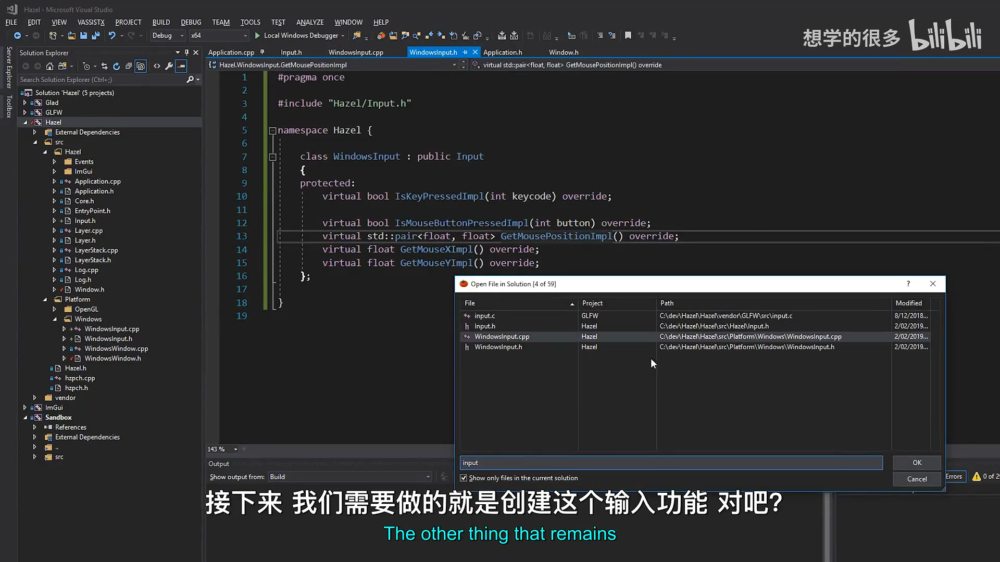
📷 在 WindowsInput.cpp 中创建 Input 静态实例
回到原视频 (00:22:18)
8. 测试输入轮询
(参考时间: 00:23:36)
为了验证链路，可以在 Application::Run() 的循环里读取鼠标位置并记录日志：
auto [x, y] = Input::GetMousePosition();
HZ_CORE_TRACE("Mouse position: {0}, {1}", x, y);
运行 Sandbox 后，持续移动鼠标即可看到坐标变化，说明：
Input::s_Instance已正确初始化；Application::Get()能取得当前窗口；GetNativeWindow()返回了有效 GLFW 句柄；glfwGetCursorPos()正在实时读取输入。
视频只实际测试了鼠标位置。键盘、鼠标按钮、GetMouseX() 和 GetMouseY() 被留作练习。
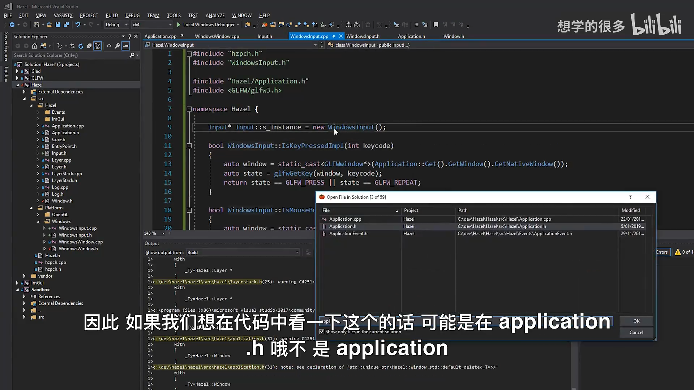
📷 在 Application 运行循环中输出实时鼠标位置
回到原视频 (00:23:36)
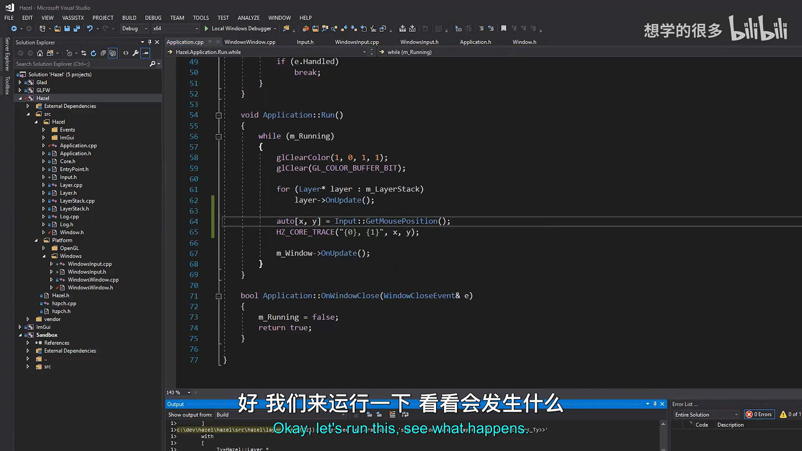
📷 日志中显示实时鼠标坐标，证明轮询链路工作
回到原视频 (00:24:16)
9. 当前实现的边界
9.1 仍使用 GLFW 键码
客户端目前仍需包含 GLFW 并使用：
GLFW_KEY_TAB
GLFW_MOUSE_BUTTON_LEFT
这只是暂时的平台编码。最终 Hazel 应提供自己的键盘和鼠标枚举，使公共 API 不依赖 GLFW。
9.2 每次查询都会访问 Application 和原生窗口
WindowsInput 的每个 Impl 函数都通过：
Application::Get().GetWindow().GetNativeWindow()
取得窗口。当前实现简单直接，但后续可以缓存句柄或在平台层提供更轻量的访问路径。
9.3 GetMouseX() 和 GetMouseY() 会查询两次光标位置
它们内部都调用 GetMousePositionImpl()。如果同一帧分别调用 X 和 Y，就会重复执行两次 glfwGetCursorPos()。客户端可以改用：
auto [x, y] = Input::GetMousePosition();
一次取得两个值。
9.4 单例生命周期尚未显式管理
进程级实例没有删除，也没有初始化状态检查。当前依赖静态初始化顺序和程序长期运行，后续需要更完整的生命周期设计。
10. 本节结论
本讲完成了 Hazel 输入系统的轮询部分：
- 新增静态
Input接口； - 用
s_Instance转发到平台实现； - 新增
WindowsInput； - 为 Window 增加
GetNativeWindow()； - 使用
glfwGetKey()查询键盘； - 使用
glfwGetMouseButton()查询鼠标按钮； - 使用
glfwGetCursorPos()查询鼠标位置； - 提供
GetMousePosition()、GetMouseX()和GetMouseY()； - 使用 C++17 结构化绑定简化 pair；
- 在窗口平台实现中初始化 Input 单例；
- 通过日志验证实时鼠标坐标。
事件系统负责“输入发生时通知”，输入轮询负责“当前是否正在输入”。两者结合后，Hazel 才能同时支持一次性动作和持续状态控制。下一讲将继续替换 GLFW 键码，建立 Hazel 自己的键码与鼠标按钮编码。